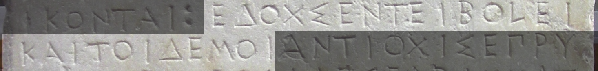

Parsing Greek morphology
Neel Smith
ICGLE, August 29, 2017
... in multiple dialects and alphabets
Digital scholarship and Classics
- 25 years ago: a leading discipline
- today: largely absent from new areas of textual analysis?
Example: latent pattern recognition
- topic modelling
- semantic relations with embedded word vectors
Some reasons, good and bad
- corpus size vs. tolerance for imprecise editions
- morphological complexity
Motivation
Homer Multitext project: manuscripts with
- multiple dialects
- unattested vocabulary
- distinct orthographies
 The Venetus A manuscript
The Venetus A manuscript
Current standards
- ISO 639* family: Greek dialects not recognized
- Unicode:
- language and script conflated
- epichoric scripts not recognized
- confusion of multivalent and contradictory glyphs
In 2017, it is (still!) not possible to encode Greek
 A Vienna secession?
A Vienna secession?
Secession, 1
Encode Greek in a specified orthography, including :
- encoding in (primarily) ASCII characters with distinct character for accent, breathing
- encoding in (primarily) Greek Unicode suitable for display
Encoding Greek
Literary Greek:
ἔδοξε == e)/doce
Pure diplomatic rendering of classical Attic:
εδοχσεν == EDOXSEN
Editorially normalized version of classical Attic:
ἔδοχσεν τêι βολêι == E)/DOXSEN TE=I BOLE=I
Secession, 2
For historical languages, every analysis is corpus-specific
A corpus-linguistic perspective
Every corpus is characterized by:
- a unique lexicon in a specified orthography
- a unique set of inflectional rules in a specified orthography
So not a parser, but...
a system for building corpus-specific parsers
Citable results
- each lexicon entry has a unique ID for lexical entity
- each inflectional has a unique ID
"Greek" is defined by analytical categories
- "noun" (GCN)
- "adjective" (GCND)
- "conjugated verb" (PNTMV)
- "infinitive" (TV)
- "participle" (GCTMV)
- "verbal adjective" (GCN)
- "adverb" (Degree)
- "indeclinable" (part of speech)
An analysis is composed of
- a string of characters analyzed
- a form
- a uniquely identified lexical entity
- a uniquely identified inflectional rule
Kanónes
A system for building parsers from tables defining:
- inflectional rules
- a lexicon of "stems"
Parsing morphology
- standard technology: finite state transducers (FST)
- require context-free state transitions
Parsing Greek
FSTs fail!
Crossing of lexical and inflectional properties of accent cannot be reduced to context-free state transitions
Solution in Kanónes
"Analysis by synthesis" algorithm:
- collect an accented word
- strip its accents, and use FST to get possible analyses
- algorithmically apply correct accent
- compare accented candidate forms to original word
Example parse
- original word: εἶπε
- εἰπε analyzed as:
- 3rd singular aorist indicative active
- 2nd singular aorist imperative active
- accenting yields:
- εἶπε for 3rd singular aorist indicative active
- εἰπέ for 2nd singular aorist imperative active
- so solution is 3rd singular aorist indicative active
A simple worked example: two parallel corpora
Andocides On the Mysteries 1.96
Νόμος. ἔδοξε τῇ βουλῇ καὶ τῷ δήμῳ.
IG 1.3, 156
Decree honoring Leonides of Halicarnassus
Vocabulary ("stems")
 Nouns, in Attic
Nouns, in Attic
 Nouns, in literary Greek
Nouns, in literary Greek
Inflectional rules
 Nouns, in Attic
Nouns, in Attic
 Nouns, in literary Greek
Nouns, in literary Greek
Analysis
 literary Greek
literary Greek
Analysis
 Attic Greek
Attic Greek
Generated
 literary Greek
literary Greek
Pipeline
Output of Attic analysis fed as input to literary generator:
 From Attic to literary Greek
From Attic to literary Greek
Current state
- largely completed in 2016 using Stuttgart FST toolkit + Java/Groovy custom classes
- summer 2017: porting custom classes to Scala substantially complete
- initial test corpora from HMT project:
- complete Iliad manuscripts
- more than 10,000 scholia
Possibilities
- morphologically sensitive structured searching
- lexically unified corpus for latent pattern analysis
- integration of corpora in distinct writing systems or dialects
Thank you!
For more information: